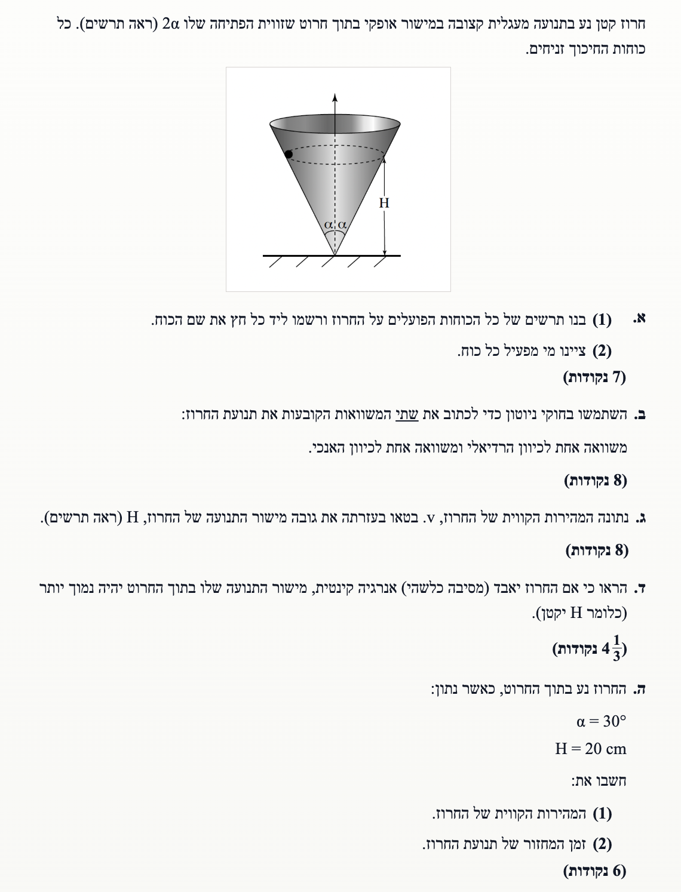
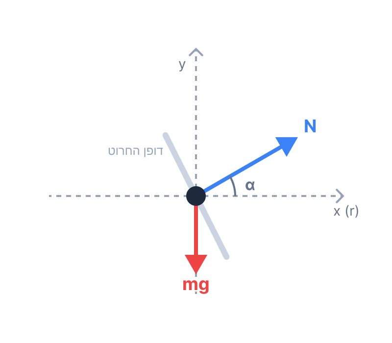

פתרון בגרות בפיזיקה - מכניקה 2010
שאלה 2: תנועה מעגלית בתוך חרוט
בשאלה זו אנו מנתחים תנועה מעגלית אופקית של חרוז המוגבל לנוע על הדופן הפנימית של חרוט חלק. נשתמש בחוקי ניוטון, בפירוק כוחות ובגיאומטריה של התנועה כדי לגלות את הקשרים בין המהירות, זווית החרוט והגובה בו החרוז מסתובב.
עודכן:
--- --:--:--

[תמונת השאלה המקורית]
לא נמצאה תמונה בשם question-image.png באותה תיקייה.
מה נתון:
- חרוז בעל מסה (נסמן אותה ב-\(m\)) נע בתנועה מעגלית קצובה.
- התנועה מתבצעת במישור אופקי בתוך חרוט שזווית הפתיחה שלו היא \(2\alpha\).
- כוחות חיכוך זניחים. תאוצת הכובד נסמן כ-\(g\) (תמיד פועלת כלפי מטה).
מה מחפשים:
בניית תרשים כוחות חופשי (FBD) הפועלים על החרוז תוך ציון שמם.
נוסחאות ועקרונות בשימוש:
\( F = mg \)
נוסחת כוח הכבידה מופיעה בדף הנוסחאות. לכוח הנורמלי (\(N\)) אין נוסחה מפורשת בדף, שכן הוא כוח מגע (אילוץ) המגיב ללחיצת הגוף על המשטח ופועל במאונך לו. גודלו ייקבע בהמשך בעזרת חוקי ניוטון.
פתרון צעד-אחר-צעד:
על החרוז פועלים שני כוחות בלבד (מאחר שאין חיכוך):
- כוח הכובד (\(\vec{W}\) או \(m\vec{g}\)): פועל אנכית כלפי מטה.
- כוח נורמלי (\(\vec{N}\)): פועל במאונך לדופן החרוט, בכיוון מעלה ופנימה (לכיוון מרכז המעגל והציר המרכזי של החרוט).
ניתוח גיאומטרי של זווית הכוח הנורמלי:
החרוט בנוי כך שזווית הפתיחה הכוללת שלו היא \(2\alpha\). לכן, הזווית בין הציר האנכי המרכזי לבין דופן החרוט היא \(\alpha\). המשמעות היא שדופן החרוט יוצרת זווית של \(90^\circ - \alpha\) עם המישור האופקי. מאחר שהכוח הנורמלי \(\vec{N}\) ניצב לדופן, הזווית שהוא יוצר עם המישור האופקי משלימה ל-\(90^\circ\), כלומר הזווית בין הכוח הנורמלי למישור האופקי היא בדיוק \(\alpha\).
תרשים כוחות חופשי (FBD) על החרוז במבט צד (כאשר הוא בצד שמאל של החרוט)

[תרשים כוחות]
לא נמצאה תמונה בשם image-1.1.png באותה תיקייה.
הכוחות הם: כוח הכובד מטה וכוח הנורמל פנימה ובמאונך לדופן.
טיפ מורה: גיאומטריה של זוויות
תלמידים רבים מתבלבלים במיקום הזווית \(\alpha\) בתרשים הכוחות. כלל אצבע שימושי: אם משטח נטוי בזווית \(\theta\) ביחס לאופק, הכוח הנורמלי (שניצב למשטח) יהיה נטוי בזווית \(\theta\) ביחס לאנך. במקרה שלנו, נתון שהחרוט פתוח בזווית \(2\alpha\), כלומר הדופן נטויה בזווית \(\alpha\) ביחס לאנך. לכן, על ידי חילוף, הכוח הנורמלי נטוי בזווית \(\alpha\) ביחס לאופק. תמיד כדאי לצייר משולש ישר זווית קטן בצד כדי לוודא שאתם לא הופכים בין סינוס לקוסינוס!
מה נתון:
תרשים הכוחות שזיהינו בסעיף א' (1) הכולל את כוח הכובד (\(\vec{W}\)) והכוח הנורמלי (\(\vec{N}\)).
מה מחפשים:
ציון הגוף (מי) שמפעיל כל אחד מהכוחות הללו על החרוז.
נוסחאות ועקרונות בשימוש:
אינטראקציה בין גופים פיזיקליים
כוח הוא תמיד ביטוי של אינטראקציה בין שני גופים - אחד מפעיל ואחד מופעל.
הסבר:
כל כוח בטבע מופעל על ידי גוף פיזיקלי כלשהו. נשייך כל כוח שפועל על החרוז למקור שלו:
- כוח הכובד (\(\vec{W}\)): מופעל על ידי כדור הארץ.
- כוח נורמלי (\(\vec{N}\)): מופעל על ידי דופן החרוט (כוח מגע כתגובה לדחיפת החרוז נגד הדופן).
כוח הכובד מופעל על ידי כדור הארץ; הכוח הנורמלי מופעל על ידי החרוט.
טיפ מורה: חיפוש ה"חשודים"
בפיזיקה קלאסית, אין כוחות "קסם". לכל כוח חייב להיות גוף פיזיקלי שמפעיל אותו. אם אתם לא מוצאים איזה גוף נוגע בחרוז או מושך אותו (כמו כדור הארץ) – הכוח הזה פשוט לא קיים! כלל זה יעזור לכם להימנע מ"להמציא" כוחות שגויים בתרשים הכוחות שלכם.
מה נתון:
נתוני סעיף א', בתוספת הידיעה שהחרוז נע בתנועה מעגלית במישור אופקי. כלומר, אין לו תנועה (או תאוצה) בציר האנכי, ויש לו תאוצה רדיאלית כלפי מרכז המעגל האופקי.
מה מחפשים:
לכתוב את שתי המשוואות הקובעות את תנועת החרוז על פי חוקי ניוטון (החוק השני): אחת לכיוון הרדיאלי (ציר ה-\(x\)) ואחת לכיוון האנכי (ציר ה-\(y\)).
נוסחאות ועקרונות בשימוש:
\[ \Sigma\vec{F} = m\vec{a} \]
\[ a_R = \frac{v^2}{R} \]
אי-תלות בין צירים
חישוב:
נפרק את הכוח הנורמלי לרכיביו בהתאם למערכת הצירים שבחרנו בתרשים (ציר \(y\) אנכי מעלה, ציר \(x\) רדיאלי למרכז הסיבוב):
- הרכיב האנכי של הנורמל: \( N_y = N \sin\alpha \)
- הרכיב האופקי (הרדיאלי) של הנורמל: \( N_x = N \cos\alpha \)
1. משוואה לכיוון האנכי (ציר ה-\(y\)):
מכיוון שהחרוז חג במישור אופקי, אין לו תאוצה בציר האנכי (\(a_y = 0\)). לפי החוק הראשון של ניוטון, סכום הכוחות בציר זה שווה לאפס.
\[
\begin{aligned}
& \Sigma F_y = 0 \\
& N_y - W = 0 \\
& N \sin\alpha - mg = 0
\end{aligned}
\]
2. משוואה לכיוון הרדיאלי (ציר ה-\(x\)):
החרוז נע בתנועה מעגלית קצובה בעלת רדיוס \(R\) ומהירות קווית \(v\). התאוצה שלו מכוונת למרכז המעגל וגודלה \(a_R = \frac{v^2}{R}\). הכוח היחיד שפועל בכיוון זה הוא הרכיב האופקי של הכוח הנורמלי.
\[
\begin{aligned}
& \Sigma F_x = m a_R \\
& N_x = m \frac{v^2}{R} \\
& N \cos\alpha = m \frac{v^2}{R}
\end{aligned}
\]
\( N \sin\alpha = mg \)
\( N \cos\alpha = \frac{mv^2}{R} \)
טיפ מורה: התפקיד הכפול של הנורמל
שימו לב ליופי שבפיזיקה כאן: לכוח הנורמלי יש "שני כובעים". הרכיב האנכי שלו אחראי לאזן את כוח הכובד כדי שהחרוז לא ייפול למטה בתוך החרוט, ואילו הרכיב האופקי שלו מתפקד כ"כוח הצנטריפטלי" שמושך את החרוז פנימה ומונע ממנו להמשיך בקו ישר החוצה. זה מדגיש מדוע אי אפשר לנוע בתנועה מעגלית ללא משטח שדוחף פנימה (או חוט/כבידה)!
מה נתון:
נתונה המהירות הקווית של החרוז, \(v\). כמו כן, לפי השרטוט בשאלה, רדיוס הסיבוב \(R\) נמצא בגובה \(H\) מקודקוד החרוט.
מה מחפשים:
לבטא את גובה מישור התנועה, \(H\), בעזרת המהירות \(v\) (וכמובן שמותר להשתמש גם בקבועים \(\alpha\) ו-\(g\) אם נדרש).
נוסחאות ועקרונות בשימוש:
טריגונומטריה: \(\tan\alpha = \frac{\text{לומ}}{\text{דיל}}\)
פתרון צעד-אחר-צעד:
תחילה, נמצא את הקשר הגיאומטרי בין הרדיוס \(R\), הגובה \(H\) והזווית \(\alpha\). נביט במשולש ישר הזווית שנוצר על ידי הציר המרכזי (\(H\)), רדיוס המעגל (\(R\)), ודופן החרוט. לפי עקרונות הטריגונומטריה מתוך המשולש:
\[ \tan\alpha = \frac{R}{H} \implies R = H \tan\alpha \]
כעת, ניקח את שתי המשוואות שפיתחנו בסעיף ב':
- \( N \sin\alpha = mg \)
- \( N \cos\alpha = \frac{m v^2}{R} \)
נחלק את משוואה 1 במשוואה 2 כדי לבודד את \(\tan\alpha\) ולהיפטר מהנעלם \(N\) ומהמסה \(m\):
\[
\begin{aligned}
& \frac{N \sin\alpha}{N \cos\alpha} = \frac{mg}{\frac{m v^2}{R}} \\[1ex]
& \tan\alpha = \frac{g R}{v^2}
\end{aligned}
\]
נציב את הביטוי הגיאומטרי של הרדיוס \(R = H \tan\alpha\) לתוך המשוואה:
\[ \tan\alpha = \frac{g (H \tan\alpha)}{v^2} \]
נצמצם ב-\(\tan\alpha\) (הוא שונה מאפס כי החרוט אינו גליל צר לחלוטין) ונבודד את \(H\):
\[
\begin{aligned}
& 1 = \frac{g H}{v^2} \\
& g H = v^2 \\
& H = \frac{v^2}{g}
\end{aligned}
\]
\( H = \frac{v^2}{g} \)
טיפ מורה: תוצאה מפתיעה!
האם שמתם לב שמשהו חסר בתשובה הסופית? הזווית \(\alpha\) והמסה \(m\) נעלמו לגמרי! המשמעות הפיזיקלית המדהימה היא שגובה המסלול תלוי אך ורק במהירות החרוז (ובתאוצת הכובד). לא משנה עד כמה החרוט "רחב" או "צר", ולא משנה אם החרוז שוקל גרם או טונה – אם הוא ינוע במהירות מסוימת, הוא תמיד יתייצב בדיוק באותו הגובה מהקודקוד. זהו כוחו של הניתוח האלגברי שחושף חוקיות נסתרת בטבע!
מעבדה וירטואלית: השפעת המהירות והזווית
אינטראקטיבי
הסימולציה ממחישה את המסקנות מסעיפים ג' ו-ד'. שחקו עם המחוונים וראו מה קורה לגובה התנועה!
גובה נוכחי מהקודקוד (\(H\)):
0.200 m
ניתן לסובב בעזרת העכבר / מגע
מה נתון:
החרוז מאבד אנרגיה קינטית (מסיבה כלשהי, כגון כניסת חיכוך חלש למערכת שמאט אותו בהדרגה).
מה מחפשים:
להראות ולהסביר מדוע במצב זה, מישור התנועה החדש של החרוז בתוך החרוט יהיה נמוך יותר (כלומר \(H\) יקטן).
נוסחאות ועקרונות בשימוש:
\[ E_k = \frac{1}{2}mv^2 \]
הסבר:
האנרגיה הקינטית מוגדרת על ידי הנוסחה \( E_k = \frac{1}{2}mv^2 \). מסת החרוז \(m\) נשארת קבועה.
לכן, אם האנרגיה הקינטית של החרוז קטנה, המשמעות המתמטית והפיזיקלית ההכרחית היא שריבוע המהירות \(v^2\) (וכמובן שגם גודל המהירות עצמו, \(v\)) חייב לקטון.
מתוך הביטוי שפיתחנו בסעיף ג':
\[ H = \frac{v^2}{g} \]
ניתן לראות כי קיים יחס ישר בין הגובה \(H\) לבין ריבוע המהירות \(v^2\) (שכן \(g\) קבוע). מכיוון ש-\(v^2\) קטן, אזי בהכרח גם המונה של השבר קטן, ולכן גם הערך של \(H\) יקטן בהתאמה.
מסקנה: מאחר שהאנרגיה הקינטית יורדת, גודל המהירות (\(v\)) קטן. לפי הקשר \(H \propto v^2\), ירידה במהירות גוררת בהכרח ירידה בגובה \(H\), ולכן מישור התנועה יהיה נמוך יותר.
טיפ מורה: קריאת משוואות כסיפור
שאלות הסבר (כמו "הראה כי...") נפתרות בצורה הטובה ביותר על ידי "קריאת" המשוואות שפיתחנו קודם. במקום לנחש או להסתמך רק על אינטואיציה (שאולי אומרת שאם הוא איטי הוא נופל מטה), אנו מבססים את הטיעון על קשר מתמטי מוצק. השרשרת הלוגית ברורה: איבוד אנרגיה -> הקטנת מהירות -> הקטנת הגובה לפי המשוואה מסעיף ג'. זוהי הדרך הבטוחה לקבל את מלוא הנקודות!
מה נתון:
- זווית החרוט (חצי הזווית): \(\alpha = 30^\circ\).
- גובה החרוז: \(H = 20\text{ cm}\).
- תאוצת הכובד נלקחת תמיד חיובית בחישוב גדלים: \(g = 10\text{ m/s}^2\).
שלב 0 - המרת יחידות (MKS):
חובה לעבוד ביחידות מטרים. נמיר את הגובה:
\( H = 20\text{ cm} = \frac{20}{100}\text{ m} = 0.2\text{ m} \)
מה מחפשים:
לחשב את:
(1) המהירות הקווית של החרוז, \(v\).
(2) זמן המחזור של תנועת החרוז, \(T\).
נוסחאות ועקרונות בשימוש:
\[ v = \frac{2\pi R}{T} \]
טריגונומטריה: \(\tan\alpha = \frac{\text{לומ}}{\text{דיל}}\)
חישוב:
חלק (1) - חישוב המהירות הקווית \(v\):
נשתמש בנוסחה שפיתחנו בסעיף ג' (\( H = \frac{v^2}{g} \)) ונבודד את המהירות:
\[
\begin{aligned}
& v = \sqrt{g \cdot H} \\
& v = \sqrt{10 \cdot 0.2} \\
& v = \sqrt{2} \approx 1.41\text{ m/s}
\end{aligned}
\]
חלק (2) - חישוב זמן המחזור \(T\):
תחילה, עלינו למצוא את רדיוס הסיבוב \(R\) בעזרת הגיאומטריה של החרוט (\( R = H \tan\alpha \)):
\[
\begin{aligned}
& R = H \tan\alpha \\
& R = 0.2 \cdot \tan(30^\circ) \\
& R = 0.2 \cdot \frac{\sqrt{3}}{3} \approx 0.1155\text{ m}
\end{aligned}
\]
כעת נציב את הרדיוס והמהירות בנוסחת הקשר בין מהירות לזמן מחזור ונבודד את \(T\):
\[
\begin{aligned}
& T = \frac{2\pi R}{v} \\[1ex]
& T = \frac{2\pi \cdot 0.1155}{1.414} \\[1ex]
& T \approx 0.513\text{ s}
\end{aligned}
\]
(1) \( v = 1.41\text{ m/s} \)
(2) \( T = 0.513\text{ s} \)
טיפ מורה: השלבים הקטנים מונעים טעויות גדולות
שתי מלכודות נפוצות בסעיפים חישוביים: הראשונה היא לשכוח להמיר את הסנטימטרים למטרים (זה היה גורר מהירות שגויה לחלוטין פי 10!). השנייה היא עיגול מוקדם מדי של תוצאות ביניים. בחישוב \(T\) השתמשתי בערכים מדויקים ככל האפשר של \(\sqrt{2}\) ושל הרדיוס כדי למנוע "שגיאות נגררות". רק בתשובה הסופית (במסגרת הירוקה) אנו מעגלים ל-3 ספרות מהותיות כמקובל. תמיד שמרו יותר ספרות בזיכרון המחשבון שלכם לאורך הדרך!